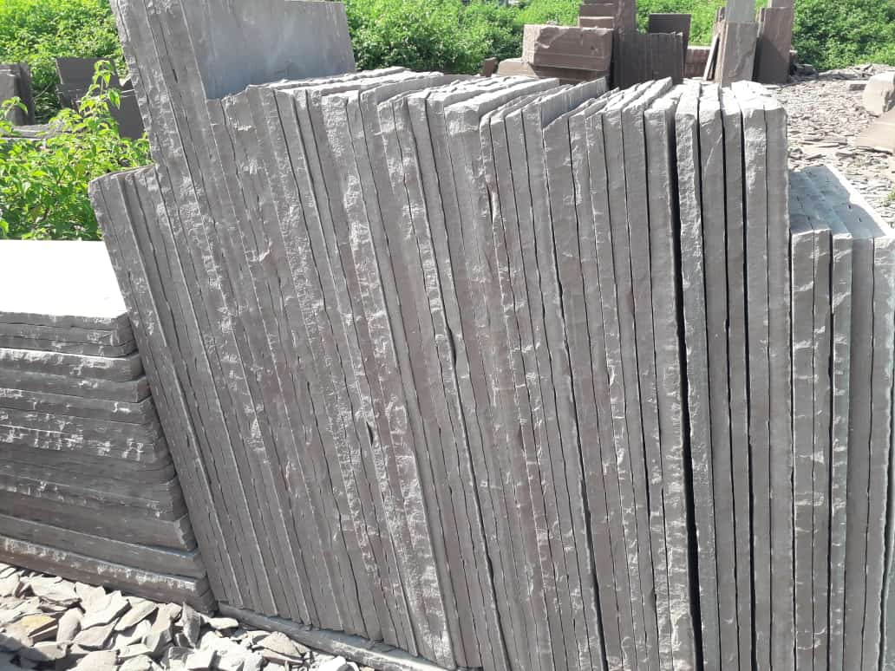

Diamond Sawn Sandstone Paving is sawn on all six sides to create a dimensionally accurate and crisp modern looking stone slab providing a contemporary urban feel. We offer a variety of finishes and sizes to match the application and desired aesthetic. As the largest Indian Sandstone Exporter, our focus on innovation allows us to continually develop finishes for our sawn paving range.
Natural cut calibrated Indian sandstone paving is made in the traditional way by skilled masons using hammer and chisel to split and dress stone slabs out of blocks. Each slab is cleanly split revealing a riven surface which creates an old world look and feel.